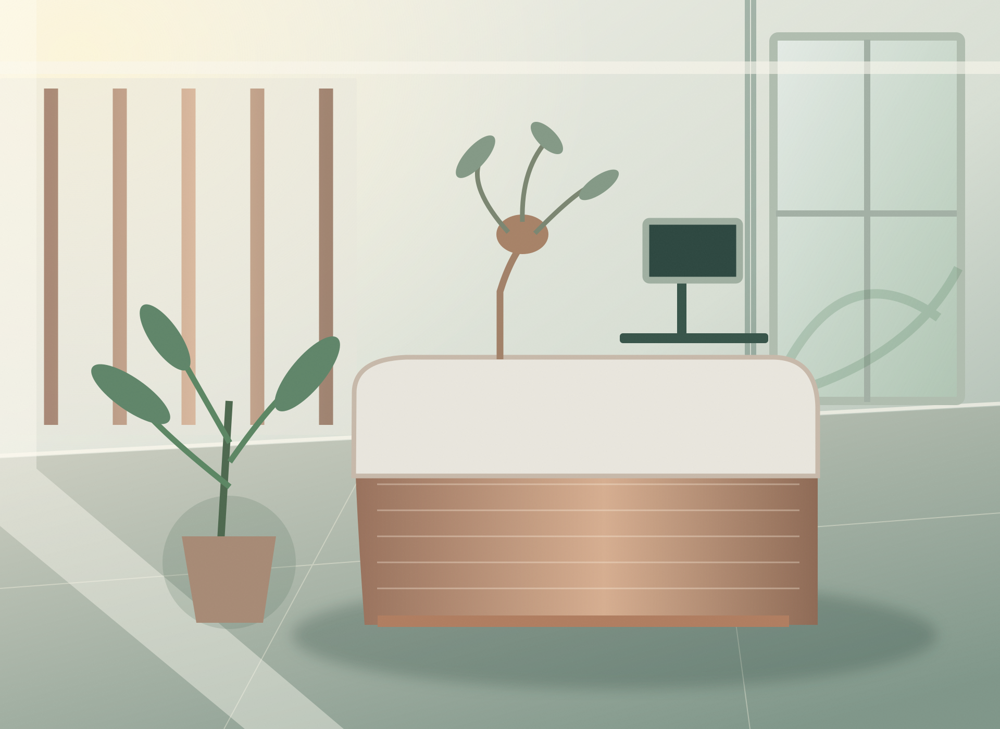
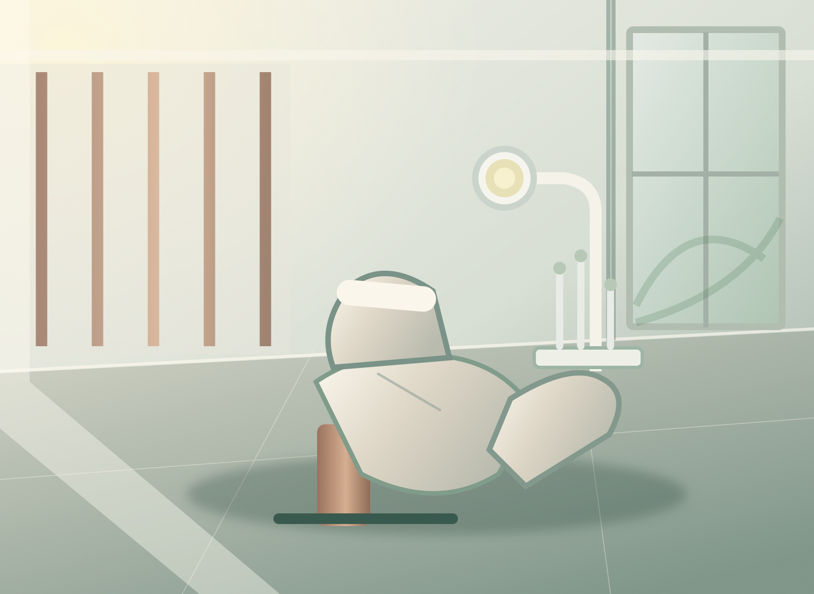

Avaliação inicial
Um ponto de partida para entender a demanda de atendimento.
AURÍNA reúne estratégia de marca, arquitetura da informação e uma linguagem de cuidado em um projeto conceitual para odontologia.
Em vez de representar a clínica por promessas ou campanhas de resultados, a identidade parte de uma ideia simples: uma conversa com atenção, autonomia e clareza. As ilustrações arquitetônicas representam um espaço imaginado, não instalações reais.

Ilustração de ambiente conceitual · não retrata instalações reais
Como a marca é fictícia, o website não apresenta profissionais, diplomas ou registros fabricados. O fluxo de solicitação utiliza apenas núcleos conceituais.
Um ponto de partida para entender a demanda de atendimento.
Etapa ilustrativa para conhecer um possível encaminhamento.
Contato conceitual para orientações e continuidade do cuidado.

As ilustrações arquitetônicas são conceitos visuais produzidos para esta demonstração. Não retratam instalações reais.